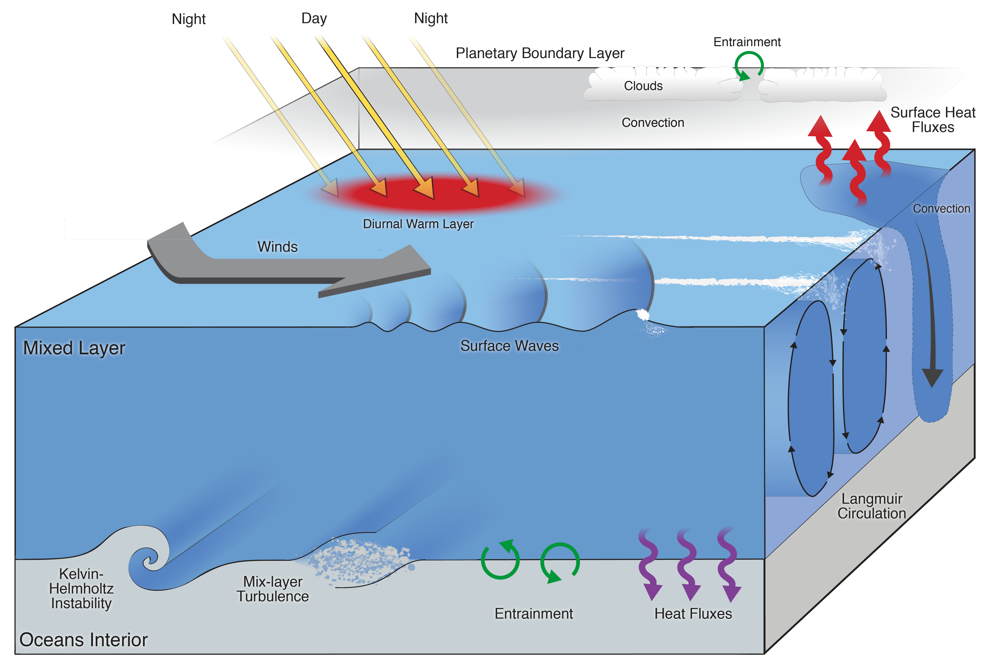
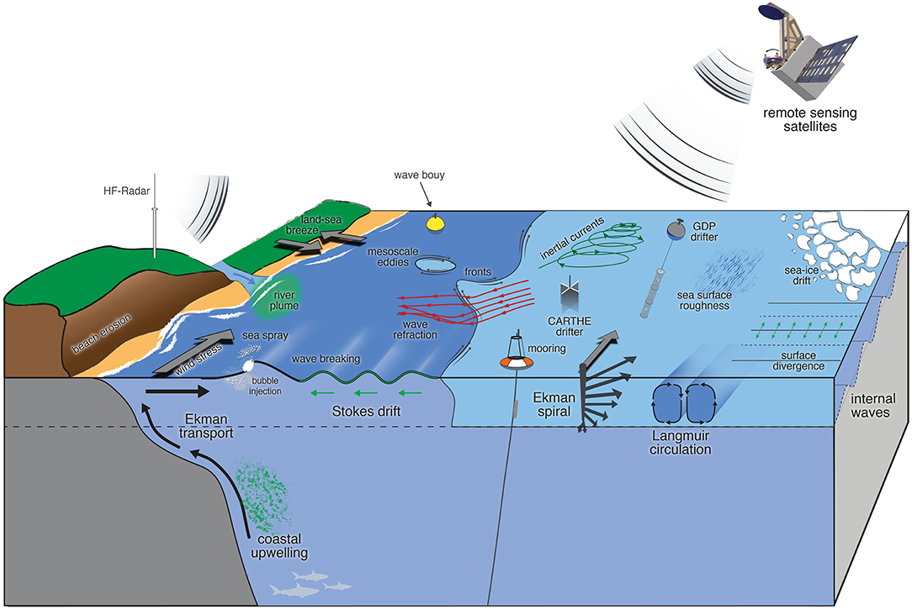
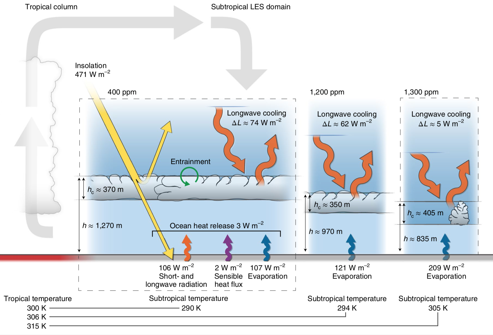
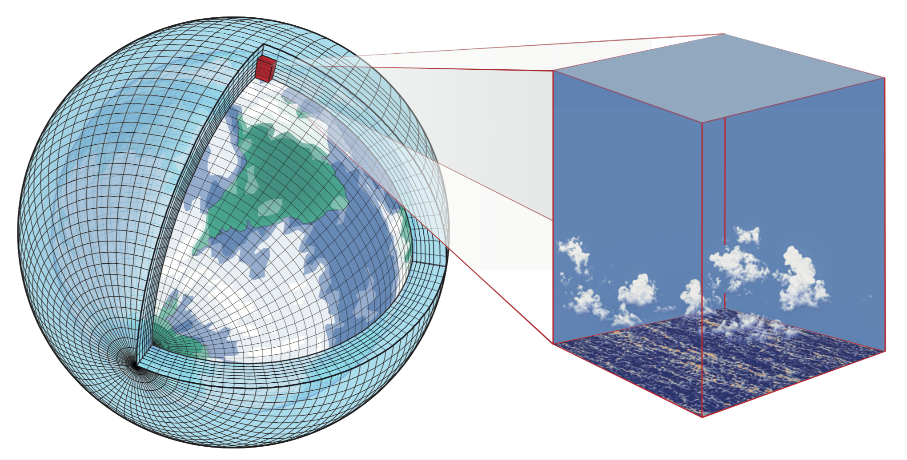
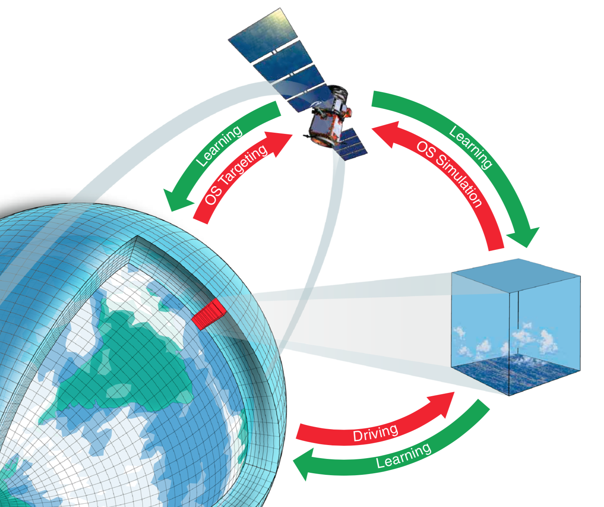
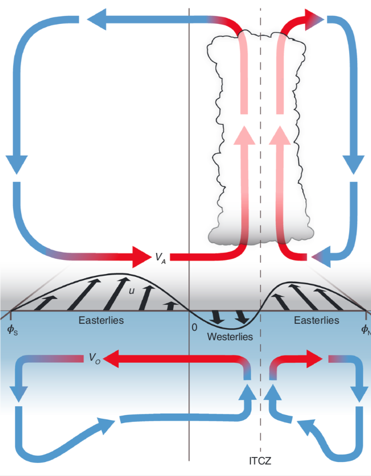
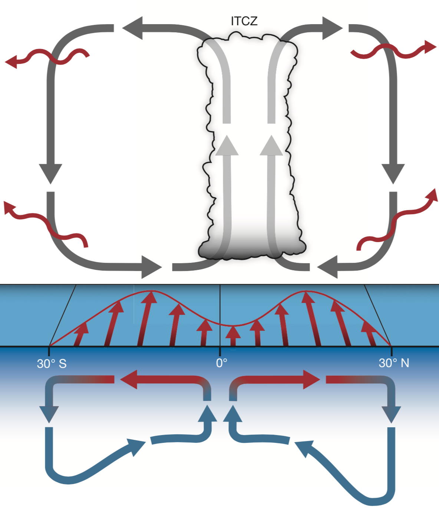

Graphics in Science Journals
Please cite the journal article when the graphic is used.
National Academies of Sciences, Engineering, and Medicine, 2020. Earth System Predictability Research and Development: Proceedings of a Workshop–in Brief.,
https://doi.org/10.17226/25861

Villas Bôas, A. B., and Coauthors, 2019. Integrated Observations of Global Surface Winds, Currents, and Waves: Requirements and Challenges for the Next Decade. Front. Mar. Sci., 6,
https://doi.org/10.3389/fmars.2019.00425

Schneider, T., C. M. Kaul, and K. G. Pressel, 2019: Possible climate transitions from breakup of stratocumulus decks under greenhouse warming. Nat. Geosci., 12, 163–167,
https://doi.org/10.1038/s41561-019-0310-1

Schneider, T., J. Teixeira, C. S. Bretherton, F. Brient, K. G. Pressel, C. Schär, and A. P. Siebesma, 2017: Climate goals and computing the future of clouds. Nat. Clim. Change, 7, 3–5.
https://doi.org/10.1038/nclimate3190

Schneider, T., S. Lan, A. Stuart, and J. Teixeira, 2017: Earth System Modeling 2.0: A Blueprint for Models That Learn From Observations and Targeted High-Resolution Simulations. Geophys. Res. Lett., 2017GL076101,
https://doi.org/10.1002/2017GL076101.

Schneider, T., 2017: Feedback of Atmosphere-Ocean Coupling on Shifts of the Intertropical Convergence Zone. Geophys. Res. Lett., 44, 11,644-11,653,
https://doi.org/10.1002/2017GL075817.

Schneider, T., T. Bischoff, and G. H. Haug, 2014: Migrations and dynamics of the intertropical convergence zone. Nature, 513, 45–53,
https://doi.org/10.1038/nature13636.
